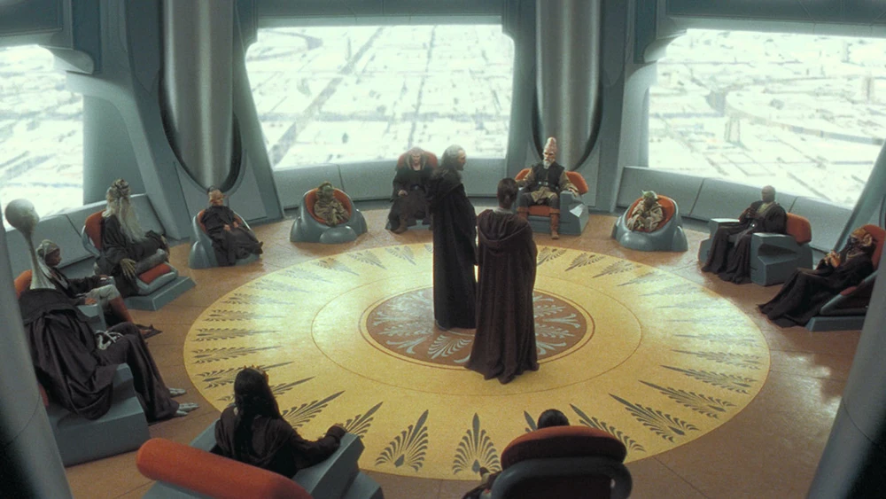

The Jedi High Council was the governing body of the Jedi Order. Its composition consisted of twelve Jedi Masters who were tasked with the responsibility of guiding the Order, largely by convening as a council to discuss matters of importance to the Jedi. The Council's activities included deliberating galactic events and discerning the will of the Force.
In the last years of the Republic Era, the Council's ranks included two notable positions—the Grand Master and the Master of the Order. The Grand Master was an honorific bestowed on the oldest and wisest living Jedi, and the holder of the title served as leader of the Jedi Order. However, the title could be shared amongst several Jedi. The Master of the Order was elected by the High Council to serve as their presiding officer. During the Invasion of Naboo in 32 BBY, Yoda held the title of Grand Master while Mace Windu served as Master of the Order. Both of these titles were held by Yoda during the time of the Clone Wars.
Privileges
Sed non tempor lacus. Donec convallis, augue a porta efficitur, massa quam faucibus lorem, quis accumsan mauris erat eu justo. Praesent commodo interdum diam, vel faucibus arcu laoreet a. Sed tristique ullamcorper libero, non accumsan arcu ultrices eget. Integer vitae ante condimentum, maximus est ac, tempor risus. Nam condimentum interdum urna, sit amet congue enim blandit eget. Proin efficitur, nunc vitae consequat hendrerit, lacus justo facilisis mi, id dictum ipsum metus et justo. Curabitur ullamcorper felis dui, et placerat tellus fermentum commodo. Sed iaculis finibus suscipit.